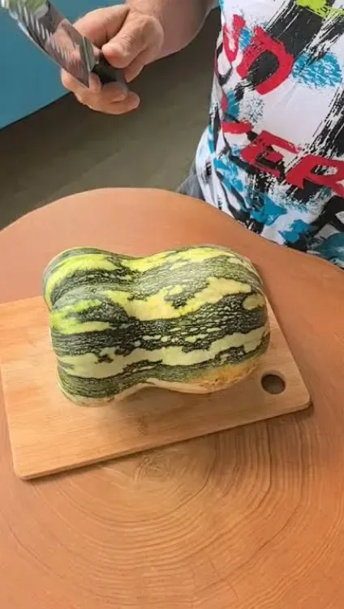
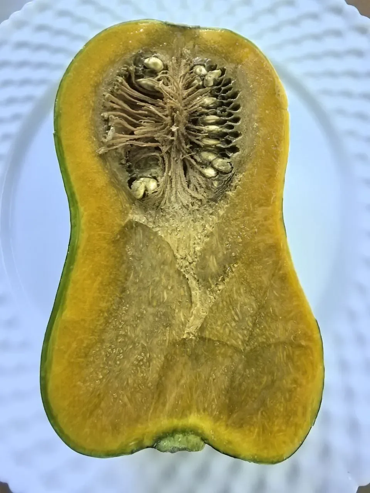
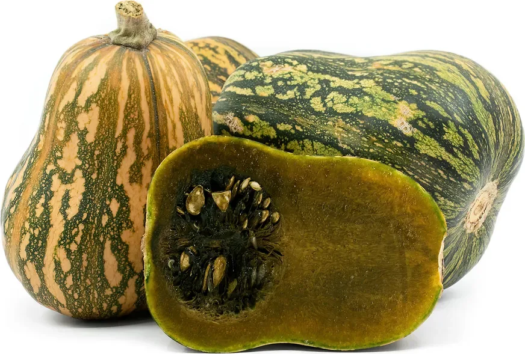
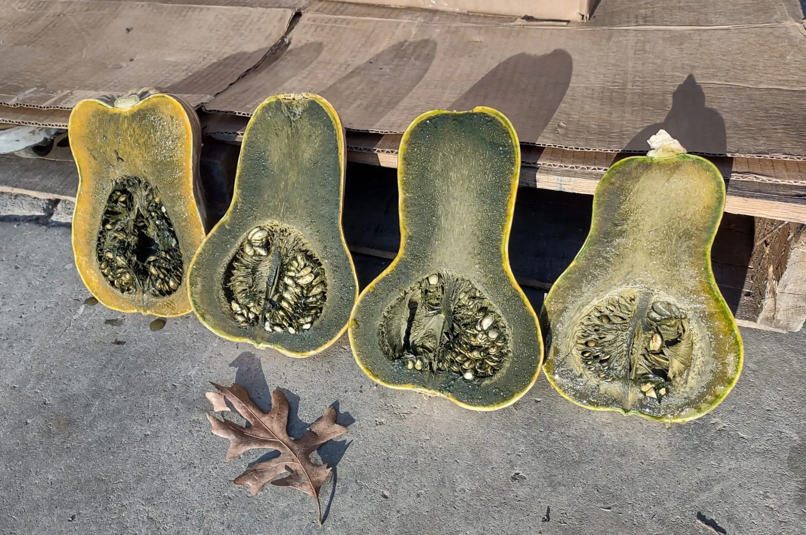

Редкий мускатный лендрейс из высокогорья Гватемалы. Плотная маслянистая мякоть — от оливково-янтарной и цвета хаки до густого изумруда, а вкус десертно-ореховый, с нотками каштана, шпината и карамели.
Мир тыквенных способен удивлять даже опытных коллекционеров экзотики.
Старинный сорт индейцев майя, ставший ботанической сенсацией.
«Айо́те» (ayote) пришло из древнего языка ацтеков науатль (ayotli). В Гватемале, Сальвадоре, Гондурасе и Коста-Рике так называют все тыквы без исключения.
Зеленоплодная линия родом из индейских поселений вокруг вулканического озера Атитлан. Веками местные фермеры выращивали её как традиционный лендрейс — народную популяцию с богатым генетическим разнообразием.
В коллекционную среду семена попали благодаря этноботанику и агроному Джею Босту (Jay Bost), который привёз их из Гватемалы в США. Позже на ферме Twin Oaks Seed Farm в штате Вирджиния отобрали растения с самой тёмной зелёной мякотью и адаптировали южную гостью к умеренным широтам.
Сорт защищён инициативой Open Source Seed Initiative — это достояние человечества, которое нельзя запатентовать или закрыть для свободного обмена семенами.
По классификации Айоте — Тыква мускатная (Cucurbita moschata). Но рядом с привычным баттернатом она выглядит как пришелец из джунглей.
Большинство современных коммерческих сортов мускатной тыквы имеют гладкую однотонную бежевую или кремовую кору. Гватемальская Айоте сохранила первозданный, «дикий» облик древних центральноамериканских тыкв:

Из-за пёстрой полосатой «рубашки» Айоте легко спутать с близким родственником — тыквой Кушо (Cucurbita argyrosperma), в частности с сортом Green Stripe Cushaw, или с некоторыми кабачковыми перехватками. Убедиться помогут ключевые признаки:
Айоте — живая народная популяция, поэтому внутри плодов наблюдается завораживающий спектр оттенков, а со временем они меняются:
Самое интересное происходит в тот момент, когда вы разрезаете плод.

У большинства тыкв при созревании зелёный пигмент хлорофилл разрушается, оставляя только жёлтые и оранжевые каротиноиды. У Гватемальской Айоте благодаря редкой природной мутации хлорофилл не исчезает при созревании, а накапливается одновременно с бета-каротином и сахарами.
Цвет сырой мякоти не всегда бывает радикально тёмно-зелёным прямо с грядки — сорт даёт целый спектр оттенков:
По мере лежания зимой (через 2–3 месяца после сбора) мякоть внутри плода постепенно становится всё более тёмной и зелёной. Но главное превращение происходит в духовке: даже если в сыром виде Айоте кажется горчично-оливковой или буро-жёлтой, при нагревании жёлтые полутона отступают, и запечённая мякоть приобретает насыщенный тёмно-зелёный цвет — оттенок нори, шпината или тёмного оливкового масла.
Семенная камера у спелого плода полностью сформирована: волокна сухие, а семена полные и вызревшие. Значит, зелёный цвет мякоти — именно сортовая особенность, а не признак того, что тыква не дозрела. Не бойтесь убирать плоды с грядки в срок: цвет раскроется при хранении и запекании.
Элитный столовый сорт с очень высоким содержанием сухих веществ.
Очень плотная, гладкая, совершенно без грубых волокон. После запекания становится маслянистой, шелковистой и густой — по консистенции близка к качественному батату или печёному каштану.
Плотный и хрустящий, умеренно сладкий, с освежающими фруктовыми нотками, напоминающими зелёную папайю или дыню.
Богатый баланс карамельной сладости и глубокого вкуса умами. Дегустаторы находят оттенки жареных каштанов, сливочного масла, шпината, морских водорослей и даже лёгкое послевкусие тёмного шоколада или матча.
В ней полностью отсутствует специфический кормовой запах, который многие не любят. При запекании простыми ломтиками без специй возникает ощущение, что блюдо уже слегка подсолили и смазали маслом.
Культовое блюдо Гватемалы. Крупные куски тыквы прямо с кожурой долго томят в небольшом количестве воды с неочищенным тростниковым сахаром (панелой или тёмным мусковадо), палочками корицы, душистым перцем, гвоздикой и имбирём. Тыква не разваривается, а превращается в плотные тягучие блестящие пряные цукаты.
Пюре из запечённой Айоте даёт потрясающий натуральный зелёный или фисташково-оливковый цвет тесту. Из него пекут необычные тыквенные пироги, кексы, хлеб и делают домашнюю пасту или клецки-ньокки.
Идеально сочетается с чесноком, шалфеем, тимьяном, козьим сыром, орехами и кокосовым молоком. Плотная мякоть отлично держит форму в супах-пюре и запеканках.
На родине сорта в пищу используют все части растения: молодые побеги и цветы тушат как нежную спаржевую зелень, а вызревшие семена обжаривают и перемалывают для густого орехово-пряного соуса пепиан (pepián).
Тыква Айоте зелёная: целые плоды, разрез и зелёная мякоть.


Несмотря на тропические корни, Айоте прекрасно удаётся у огородников в умеренном климате.
Среднепоздний или поздний сорт. Растение очень мощное и длинноплетистое, активно укореняется в междоузлиях. Для гарантированного урожая в средней полосе выращивают через рассаду.
Основные характеристики Гватемальской зелёной Айоте.
| Название сорта | Гватемальская зелёная Айоте (Guatemalan Green Ayote) |
|---|---|
| Ботанический вид | Cucurbita moschata (Тыква мускатная) |
| Происхождение | Гватемала (регион озера Атитлан), старинный сорт майя |
| Форма и кора | Перехватка (грушевидная/бутылочная), ребристая; кора зелёно-пёстрая с полосами, при хранении желтеет и бронзовеет |
| Вес плода | 1,5 – 3 кг |
| Мякоть | Плотная, маслянистая, без волокон; от оливково-янтарной до тёмно-изумрудной (сильно темнеет при запекании) |
| Вкус | Сладкий с нотками умами, печёного каштана, сливочного масла и шпината (без тыквенного запаха) |
| Срок созревания | 115–130 дней (рекомендуется через рассаду) |
| Хранение | Отличное (до 6–8 месяцев при комнатной температуре) |
Нет. У Айоте хлорофилл не разрушается при созревании, а накапливается вместе с бета-каротином и сахарами. Семенная камера у спелого плода полностью сформирована: волокна сухие, семена полные — значит, зелёный цвет это сортовая особенность, а не признак недозрелости.
Сорт — живая народная популяция, поэтому оттенки варьируются: от горчично-оливковой и цвета хаки до фисташково-болотной с зелёными прожилками и глубокой тёмно-изумрудной. Через 2–3 месяца хранения мякоть становится темнее и зеленее.
Да. Даже горчично-оливковая или буро-жёлтая в сыром виде мякоть в духовке приобретает насыщенный тёмно-зелёный цвет — оттенок нори, шпината или тёмного оливкового масла. Жёлтые полутона при нагревании отступают.
Десертно-ореховый: печёный каштан, карамель, сливочное масло, шпинат, лёгкое послевкусие тёмного шоколада или матча. Текстура маслянистая и шелковистая, как у хорошего батата. Сырая мякоть хрустящая, с фруктовыми нотками.
6–8 месяцев в обычных комнатных условиях, до весны и начала лета. Через 1,5–2 месяца хранения крахмалы переходят в сахара: вкус достигает максимума, а зелёный цвет становится глубже.
По плодоножке: у Айоте она жёсткая, деревянистая, чётко пятигранная и расклешённая у основания плода. И по цвету мякоти — зелёный «маркер» отсутствует у обычных Кушо и баттернатов.
Посадочный материал из коллекции Batatchudo и рекомендации по выращиванию.